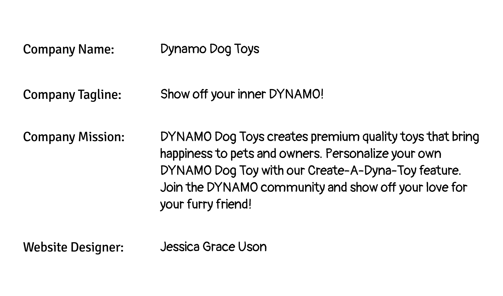
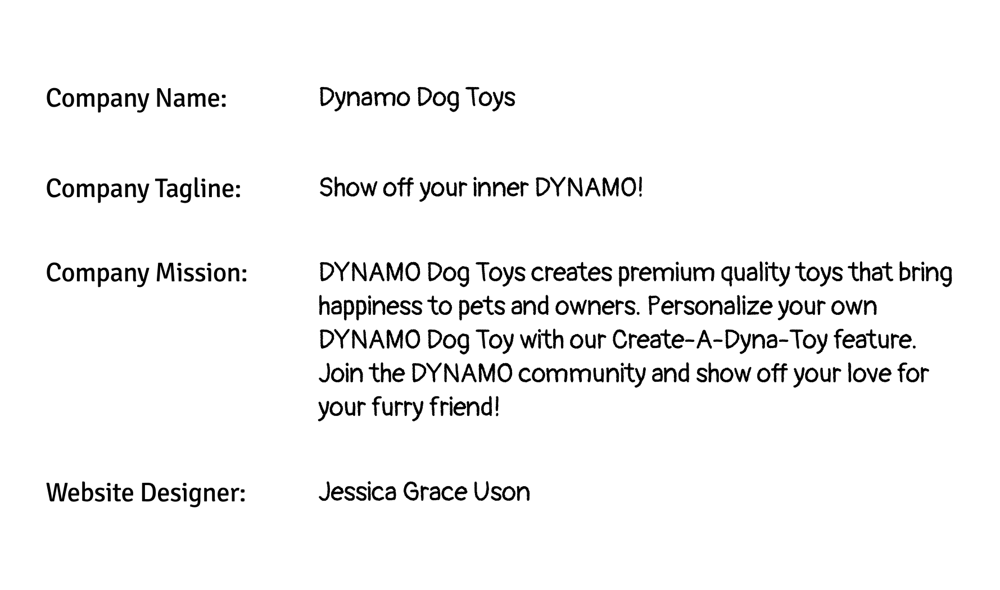

Case Study 1: Dynamo Dog Toys
Project Overview:
Create an eCommerce website that sells physical products.
Company Name:
Dynamo Dog Toys
Project Dates:
February 24, 2024 - April 24, 2024
 

Problem
Dog owners often look for premium-quality, durable, and unique toys. They typically prefer Eco-friendly items that support environmental conservation and appreciate ongoing deals.
Solution
I've developed an eCommerce website, Dynamo Dog Toys. This unique site offers the option to customize your dog toy, carries Eco-friendly products, and offers various discounts.
Process
After comprehending the company's requirements and analyzing its direct and indirect goals, I developed a web-based user experience (UX) design based on the user persona profile and crafted a low-fidelity prototype. After incorporating feedback, I created a high-fidelity prototype.
User Persona Profile
Our persona, Charlotte Parker, and her dog, Coco, are frustrated when purchasing products that aren’t Eco-friendly or contribute toward saving the environment. Charlotte is a caring pet owner who wants to give her beloved dog, Coco, the best products and experiences.

Wireframes
Low-Fidelity Wireframes
After brainstorming, I created a low-fidelity prototype of my concept in Invisionapp. The wireframe includes a homepage, Dynamo Collection page, single product page, and a Made-Eco-friendly page.
High-Fidelity Wireframe
I've ensured that the color palette is consistent, the fonts are appropriate, and the overall design is harmonious. The photos I chose were selected to enhance the energy and vibrancy of the product while also ensuring that the color palette stands out throughout. Additionally, I aimed to give the design a fun and eco-friendly feel with an overall awesome toy vibe.

Brand Style Guide
I decided on orange, blue, and purple for the website's color palette. I wanted to communicate a positive and cheerful vibe, and these colors were just the right fit for capturing the essence of Dynamo. I wanted to establish a lively and dynamic online persona for the Dynamo Dog Toys brand.
Usability Test Survey
As part of our project, we were paired with a partner to survey the usability of our prototypes. Below is a summary of the feedback::
Design Changes

1. Add the quantity number next to “Your Cart.”
During the website prototype review, a participant provided feedback suggesting that a number should be placed next to the cart to indicate that an item has been added to the cart. By providing a clear view of the number of items in the cart, this modification is aimed to enhance the user experience.
2. Changed the icon colors
At the review of the website prototype, one of the participants gave feedback regarding the icons' colors. They mentioned they were hard to see, and I recommended switching to a different color. To ensure ADA compliance and accessibility, this change will improve the precision of our icons and avoid any negative user experience.
Final Web-Based UX Prototype
Reflection
Successes
Overall, I enjoyed creating DYNAMO Dog Toys. I put a lot of effort into every aspect of the website, from the font styles to the website copy, headers, and photos. I aimed to embody the brand's essence and motivate the user persona while providing a great user experience. I believe I succeeded in achieving all six components of an excellent web-based user experience.
What I learned
During my initial experience with Figma, I realized the significance of collecting user feedback and incorporating research insights into the design, being flexible when learning a new tool, and making the most of all available resources.
Collaborate & incorporate any feedback
Having a partner working alongside me during the project was truly beneficial as it offered diverse feedback and perspectives. I valued her honesty and input throughout the process.
Utilize all resources (tools, peers, instructor)
As a newcomer to Figma, I sought guidance from my instructor, classmates, and online tutorials on YouTube. Seeking guidance can provide valuable insights, shortcuts, and best practices.
Next Steps...
To improve the website's usability, I suggest involving 3-4 more individuals in a usability test. This will help identify the most pressing issues, which can be addressed through an iterative process. In future iterations or for new website projects, I plan to incorporate the six key components of web-based user experiences to enhance the overall user experience.